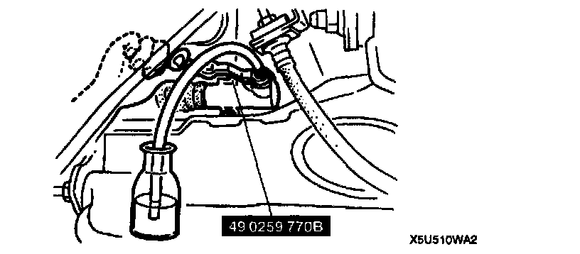

Clutch Fluid Bleeding
CLUTCH FLUID AIR BLEEDINGCaution: Clutch fluid will damage painted surfaces. If clutch fluid does get on a painted surface, wipe it off immediately.
Note:
- Do not mix different brands of fluid.
- Do not reuse the clutch fluid that was drained.
1. Remove the bleeder cap from the clutch release cylinder and attach a vinyl hose to the bleeder plug.
2. Place the other end of the vinyl hose in a clear container.
3. Slowly pump the clutch pedal several times.

4. With the clutch pedal depressed, loosen the bleeder screw by using the SST to let the fluid escape. Close the bleeder screw by using the SST.
5. Repeat Steps 3 and 4 until only clean fluid is seen.
6. Tighten the bleeder screw.
Tightening torque 5.9 - 8.8 Nm (60 - 90 kgf-cm, 53 - 78 inch lbs.)
7. Add fluid to the MAX mark.